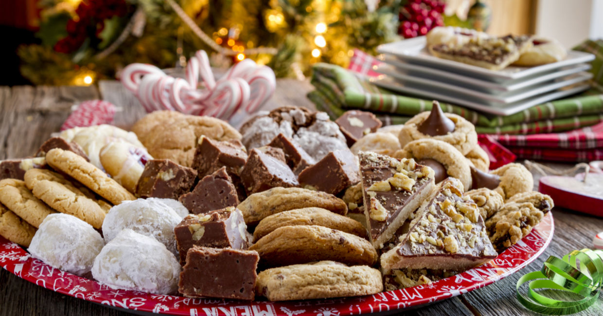

Delicious Holiday Baking Recipes
Christmas is the perfect time to bake sweet treats and share them with friends and family. Here are some festive favorites:
1. Classic Christmas Cookies
Gingerbread men, sugar cookies, and shortbread are holiday essentials. Decorate with icing and sprinkles for extra fun.
2. Festive Cupcakes
Top cupcakes with red and green frosting, candy canes, or mini ornaments for a cheerful treat.
3. Gingerbread Houses
Create gingerbread houses for fun family projects. Add candies and icing to bring them to life.
4. Holiday Cakes & Pies
Apple pies, pumpkin cakes, and Yule logs make traditional and delicious desserts for gatherings.
5. Hot Chocolate & Drinks
Serve homemade hot chocolate with marshmallows or peppermint syrup for a festive drink to complement your treats.